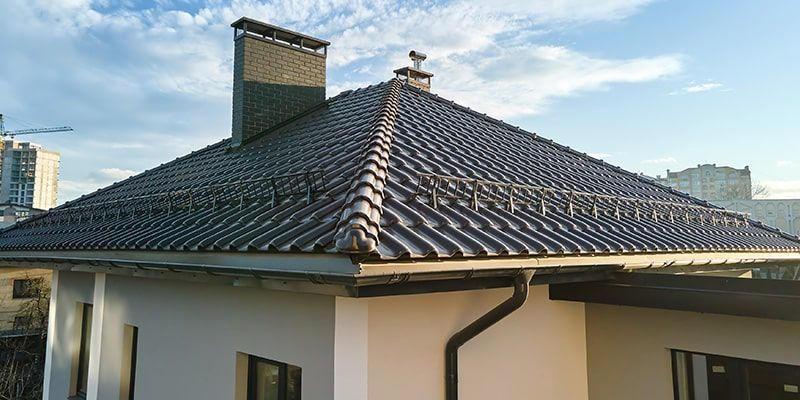

Капитальное устройство вальмовой крыши
Сборка стропильной системы с нуля, укладка супердиффузионной мембраны и покрытие металлочерепицей Grand Line Satin 0.5 мм.
«Ребята сработали как часы. Смета не выросла ни на рубль, привезли оригинальный толстый металл Гранд Лайн. Огромное спасибо бригадиру Игорю за компьютерную 3D-раскладку!»